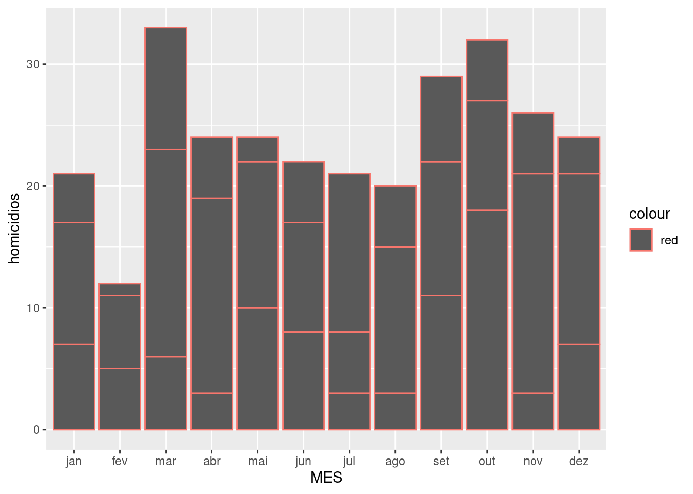
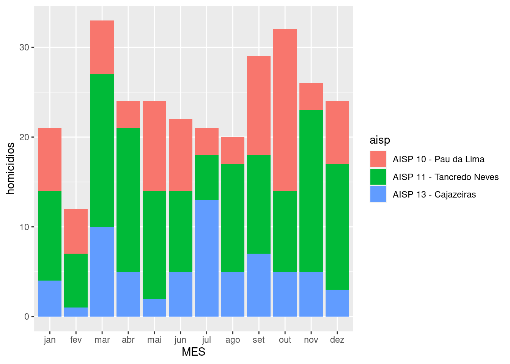
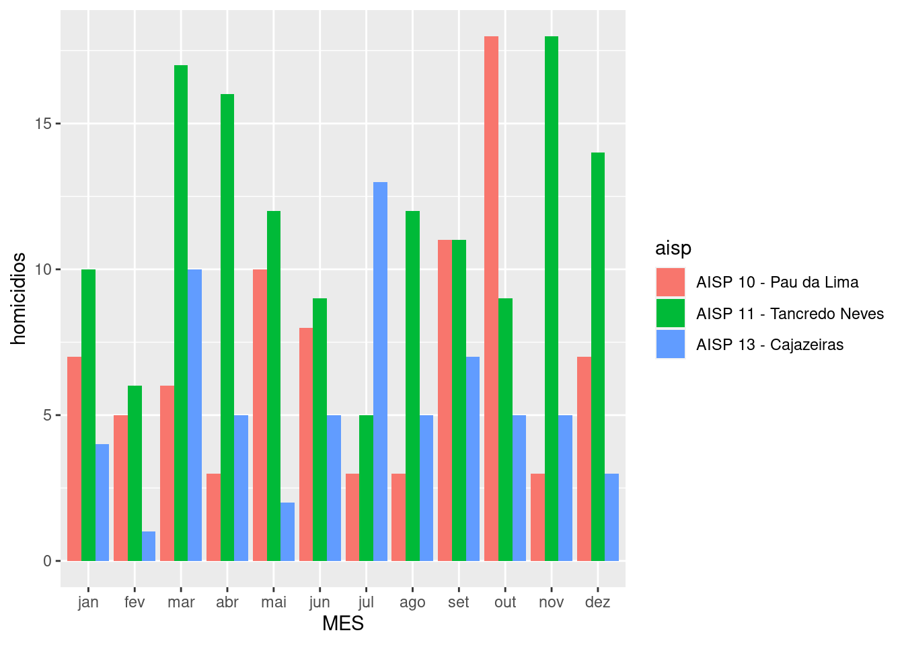
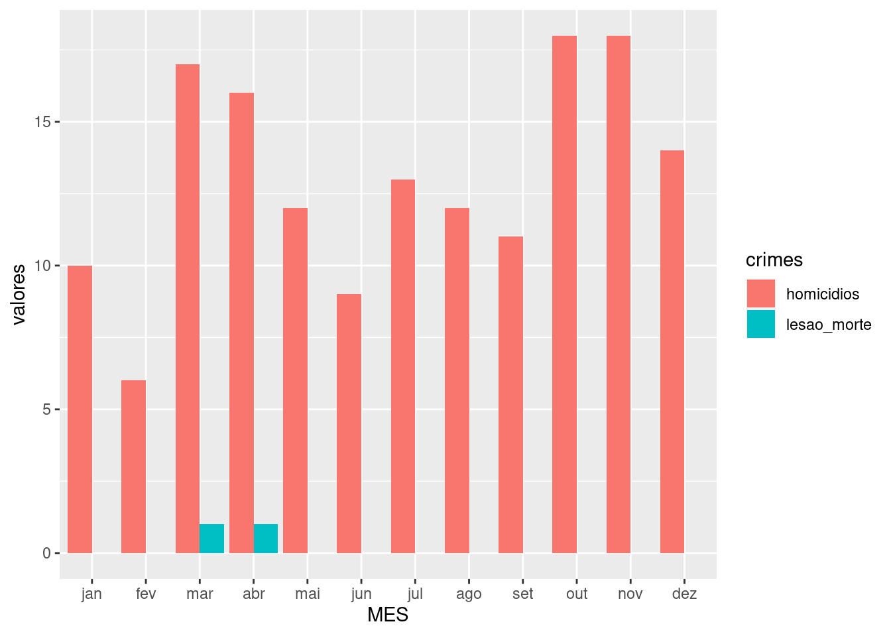
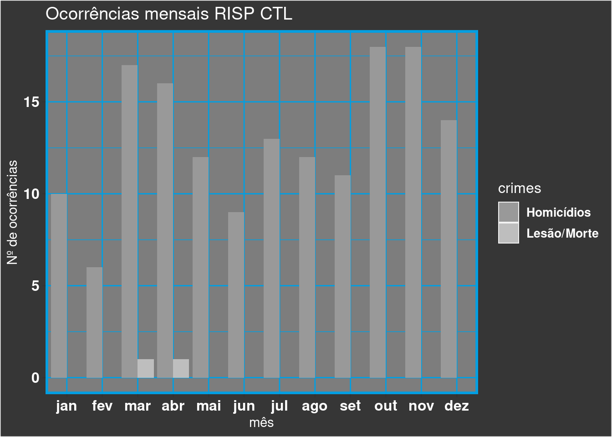

4 Atividades
4.1 Carregamento de bibliotecas e dados
library(dplyr)##
## Attaching package: 'dplyr'## The following objects are masked from 'package:stats':
##
## filter, lag## The following objects are masked from 'package:base':
##
## intersect, setdiff, setequal, unionlibrary(tidyr)
library(readr)
library(ggplot2)
library(magrittr)##
## Attaching package: 'magrittr'## The following object is masked from 'package:tidyr':
##
## extractlibrary(lubridate)##
## Attaching package: 'lubridate'## The following objects are masked from 'package:base':
##
## date, intersect, setdiff, unionlibrary(readr)
library(DT)
dados <- read_csv("data/all_data_v00.csv",
col_types = cols(X1 = col_integer(),
id = col_integer(), date = col_date(format ="%Y-%m-%d")),
locale = locale(encoding = "ISO-8859-1"))4.2 Exemplo de aplicação do Lubridate
dados %>% filter(ano==2014) %>%
filter(aisp=="AISP 12 - Itapuã") %>%
select(mes,homicidios) %>% arrange(homicidios) %>%
mutate(MES = month(ymd(140101) + months(mes - 1), label = TRUE))## # A tibble: 12 x 3
## mes homicidios MES
## <dbl> <dbl> <ord>
## 1 7 7 jul
## 2 5 8 mai
## 3 3 10 mar
## 4 9 10 set
## 5 6 12 jun
## 6 10 12 out
## 7 12 12 dez
## 8 1 14 jan
## 9 11 14 nov
## 10 2 16 fev
## 11 8 18 ago
## 12 4 19 abr4.3 Uso do Data Table (DT)
dados %>% filter(ano==2014) %>%
filter(aisp=="AISP 12 - Itapuã") %>%
select(mes,homicidios) %>% arrange(homicidios) %>%
mutate(MES = month(ymd(140101) + months(mes - 1), label = TRUE)) %>%
select(MES,homicidios) %>% arrange(MES) %>%
datatable()4.4 Resolução de situações problemas
Nesta seção desejamos apresentar o resultado de análise das ocorrências de crimes na região central da cidade constituída pela Região Integrada de Segurança Pública (RISP CTL).
Aqui trabalharemos com o banco de dados construído a partir de boletins mensais disponibilizados pela Secretaria de Segurança Pública.
Primeiro faremos os filtros necessarios:
- AISP 11 - Tancredo Neves,AISP 10 - Pau da Lima e AISP 13 - Cajazeiras;
- Definicao de um ano especifico, para os últimos 12 meses válidos é 2019;
- Seleção de variáveis Homicídios e Lesão Seguida de Morte
4.4.1 Código filtros e seleções
dados %>% filter(aisp %in% c('AISP 11 - Tancredo Neves',
'AISP 10 - Pau da Lima',
'AISP 13 - Cajazeiras')) %>%
filter(ano==2019) %>%
select(mes,homicidios,lesao_morte) ## # A tibble: 36 x 3
## mes homicidios lesao_morte
## <dbl> <dbl> <dbl>
## 1 1 7 0
## 2 1 10 0
## 3 1 4 0
## 4 2 5 0
## 5 2 6 0
## 6 2 1 0
## 7 3 6 0
## 8 3 17 0
## 9 3 10 1
## 10 4 3 0
## # … with 26 more rows4.4.2 Código - manipulação de datas
Embora haja a variável mês no nosso conjunto de dados, ela está no formato numérico, que para a produção de visualizações de dados discretizados no domínio do tempo é mais conveniente sua apresentação com a formatação de datas e ou horários. Portanto, utilizaremos outro pacote do conjunto tidyverse, o lubridate. A seguir, demonstraremos a conversão dos dados numéricos no seus correspondentes símbolos de data.
dados %>% filter(aisp %in% c('AISP 11 - Tancredo Neves',
'AISP 10 - Pau da Lima',
'AISP 13 - Cajazeiras')) %>%
filter(ano==2019) %>%
select(mes,homicidios,lesao_morte) %>%
mutate(MES = month(ymd(190115) + months(mes - 1), label = TRUE))## # A tibble: 36 x 4
## mes homicidios lesao_morte MES
## <dbl> <dbl> <dbl> <ord>
## 1 1 7 0 jan
## 2 1 10 0 jan
## 3 1 4 0 jan
## 4 2 5 0 fev
## 5 2 6 0 fev
## 6 2 1 0 fev
## 7 3 6 0 mar
## 8 3 17 0 mar
## 9 3 10 1 mar
## 10 4 3 0 abr
## # … with 26 more rowsA última linha do código contém um mutate(). No qual,
é adotada uma data de referência, neste caso, ymd(190115)
correponde a data 15/jan/2019 definido pela
função ymd() em seguida é somado o valor correspondente
a cada mês com mes-1, pois assim somaremos 0 meses a data de
15/jan/2019 e assim obteremos a representação adequada de todos os meses e o extrairemos por meio de outro comando do pacote
lubridate, chamado month(...,label=TRUE) no qual a option ``label=TRUE``` nos
fornecerá a variável jan,fev,…,dez.
4.4.3 Código Gráficos
Para a construção dos gráficos é necessário estudar cheatsheet da biblioteca do ggplot2.
Para realizar esta produção gráfica de maneira adequada é conveniente que os dados sejam corretamente prepados. Tinhamos o objetivo inicial de construir os gráficos de maneira que as variáveis dos crimes ficassem empilhadas, portanto, devemos averiguar se a estrutura do nosso banco está da forma mais apropriada para o uso da biblioteca do ggplot2 na sua forma mais simples de uso, ou se devemos utilizar recursos da própria biblioteca gráfica para alcançar nossos resultados.
Para aproveitar melhor a
folha de dicas do ggplot2
é necessário conhecer os tipos de variáveis
que estamos trabalhando. Sabemos que a nossa variável
que ocupará a abscissa são as representações
as abreviaturas dos meses, portanto,
variáveis categoricas ou discretas, especialmente
poir serem variáveis produzidas pelo pacote lubridate
herdaram propriedades de ordenação temporal <ord>.
Enquanto que as variáveis dos crimes foram
imprtadas do banco como double (<dbl>).
Assim, em resumo temos uma variavél discrete e outra
continuos. Portanto, ao consultarmos a seção
discrete x, continous y do
folha de dicas do ggplot2 chegamos a conclusão que devemos usar
a geom_col() para a geometria do nosso gráfico.
Primeiro faremos os gráficos
de ocorrências de homicídios:
dados %>% filter(aisp %in% c('AISP 11 - Tancredo Neves',
'AISP 10 - Pau da Lima',
'AISP 13 - Cajazeiras')) %>%
filter(ano==2019) %>%
select(mes,homicidios,lesao_morte) %>%
mutate(MES = month(ymd(190115) + months(mes - 1), label = TRUE)) %>%
ggplot(aes(x = MES,y = homicidios,colour='red')) + geom_col()
destacamos o contorno das observações em vermelho para mostar
que este tipo de gráfico é construído de tal maneira que
não efetua uma soma ao longo das linhas e sim empilha
as observações sendo que são proporcionais aos seus respectivos valores. Para cada mês, para o filtro que realizamos acima, possui 3
valores que correpondem às AISP 11 - Tancredo Neves,AISP 10 - Pau da Lima e AISP 13 - Cajazeiras. Para aperfeiçoar a apresentação deste gráfico podemos colori-lo em função das AISPs, mas
antes temos incluir a variável aisp no select() como realizado
abaixo:
dados %>% filter(aisp %in% c('AISP 11 - Tancredo Neves',
'AISP 10 - Pau da Lima',
'AISP 13 - Cajazeiras')) %>%
filter(ano==2019) %>%
select(mes,aisp,homicidios,lesao_morte) %>%
mutate(MES = month(ymd(190115) + months(mes - 1), label = TRUE)) %>%
ggplot(aes(x = MES,y = homicidios,fill=aisp)) + geom_col()
Vamos explorar um pouco mais as funcionalidades desta biblioteca.
A opção default produz a versão empilhadas de observações pertencentes às categorias das abscissas, neste caso são os meses.
A seguir, apresentamos outro gráfico, apenas colocando as observações de cada aisp lado a lado, facilitando a comparação dos gráficos
apenas trabalhando com uma option na geometria geom_col(position = 'dodge'):
dados %>% filter(aisp %in% c('AISP 11 - Tancredo Neves',
'AISP 10 - Pau da Lima',
'AISP 13 - Cajazeiras')) %>%
filter(ano==2019) %>%
select(mes,aisp,homicidios,lesao_morte) %>%
mutate(MES = month(ymd(190115) + months(mes - 1), label = TRUE)) %>%
ggplot(aes(x = MES,y = homicidios,fill=aisp)) + geom_col(position = 'dodge')
Desta vez o objetivo é a comparação de dois crimes, ocorrências de
homicídios e lesão seguida de morte, para alcaçar tal objetivo
é necessário que os crimes sejam organizados de forma similar
à variável aisp, para isto utilizaremos o comando gather()
que pertence ao pacote tidyr,
demonstraremos esta transformação:
dados %>% filter(aisp %in% c('AISP 11 - Tancredo Neves',
'AISP 10 - Pau da Lima',
'AISP 13 - Cajazeiras')) %>%
filter(ano==2019) %>%
select(mes,aisp,homicidios,lesao_morte) %>%
mutate(MES = month(ymd(190115) + months(mes - 1), label = TRUE)) %>%
gather(key = crimes,value = valores,-mes,-aisp,-MES) %>%
arrange(MES)## # A tibble: 72 x 5
## mes aisp MES crimes valores
## <dbl> <chr> <ord> <chr> <dbl>
## 1 1 AISP 10 - Pau da Lima jan homicidios 7
## 2 1 AISP 11 - Tancredo Neves jan homicidios 10
## 3 1 AISP 13 - Cajazeiras jan homicidios 4
## 4 1 AISP 10 - Pau da Lima jan lesao_morte 0
## 5 1 AISP 11 - Tancredo Neves jan lesao_morte 0
## 6 1 AISP 13 - Cajazeiras jan lesao_morte 0
## 7 2 AISP 10 - Pau da Lima fev homicidios 5
## 8 2 AISP 11 - Tancredo Neves fev homicidios 6
## 9 2 AISP 13 - Cajazeiras fev homicidios 1
## 10 2 AISP 10 - Pau da Lima fev lesao_morte 0
## # … with 62 more rowsentre os argumentos da função ``gather()``` estão key que recebe as tags das variáveis ( neste caso são homicidios e lesao_morte) e value que recebe os respectivos valores das variáveis. Assim os dados são empilhados. As variáveis que são acompanhados de sinal menos \(-\) não são empilhadas. Agora é possível produzir uma visualização gráfica como realizado em etapas anteriores:
dados %>% filter(aisp %in% c('AISP 11 - Tancredo Neves',
'AISP 10 - Pau da Lima',
'AISP 13 - Cajazeiras')) %>%
filter(ano==2019) %>%
select(mes,aisp,homicidios,lesao_morte) %>%
mutate(MES = month(ymd(190115) + months(mes - 1), label = TRUE)) %>%
gather(key = crimes,value = valores,-mes,-aisp,-MES) %>%
ggplot(aes(x = MES,y = valores,fill=crimes)) + geom_col(position = 'dodge')
Como os casos lesão seguida de morte são zero para quase todos os meses não é possível observar as barras azuis em alguns meses.
Por uma questão de identidade visual podemos estar interessados em manipular um gráfico para alcançar uma respentação visual mais
refinada. Aqui tentaremos nos aproximar da identidade visual do
site do grupo Gamma
por meio das funções theme() e scale_fill_manual():
## FILTROS
dados %>% filter(aisp %in% c('AISP 11 - Tancredo Neves',
'AISP 10 - Pau da Lima',
'AISP 13 - Cajazeiras')) %>%
filter(ano==2019) %>%
## SELECAO
select(mes,aisp,homicidios,lesao_morte) %>%
## TRANSFORMACAO
mutate(MES = month(ymd(190115) + months(mes - 1), label = TRUE)) %>%
gather(key = crimes,value = valores,-mes,-aisp,-MES) %>%
## MAPEAMENTO
ggplot(aes(x = MES,y = valores,fill=crimes)) +
## DEFINICAO GEOMETRIA
geom_col(position = 'dodge')+
## INCLUSAO DE LABELS
labs(title = "Ocorrências mensais RISP CTL",
x = "mês",
y = "Nº de ocorrências"
)+
## ALTERACAO FONTS LABS
theme(title = element_text(size = 12,colour = "white"))+
theme(axis.title.x=element_text(size=11)) +
theme(axis.title.y=element_text(size=11)) +
theme(axis.text=element_text(face="bold", color="white",size =12)) +
## ALTERACAO FONTS LEGENDA
theme(legend.text=element_text(size =11)) +
theme(legend.background = element_rect(fill=NA,
size=0.5, linetype="solid",
colour =NA))+
scale_fill_discrete(name = 'Crimes', labels = c("Homicídios", "Lesão/Morte"))+
theme(legend.text = element_text(colour="white", size=10,
face="bold"))+
## ALTERACAO BACKGROUD DA AREA DE PLOTAGEM - PARTE EXTERNA
theme(plot.background = element_rect(fill = "#363636"))+
## ALTERACAO BACKGROUD DA AREA DE PLOTAGEM - PARTE INTERNA
theme(panel.grid = element_blank(), axis.ticks.y = element_line())+
theme(panel.border = element_rect(fill=NA, color = "#009FE3", size = 2))+
theme(panel.background = element_rect(fill="#7D7D7D",color = "#7D7D7D", size = 2), panel.grid.major = element_line(color = "#009FE3", size = .5),
panel.grid.minor = element_line(color = "#009FE3", size = .25))+
## DEFINICAO CORES MANUAL
scale_fill_manual(values=c("#999999", "gray"),labels = c("Homicídios", "Lesão/Morte"))## Scale for 'fill' is already present. Adding another scale for 'fill', which
## will replace the existing scale.